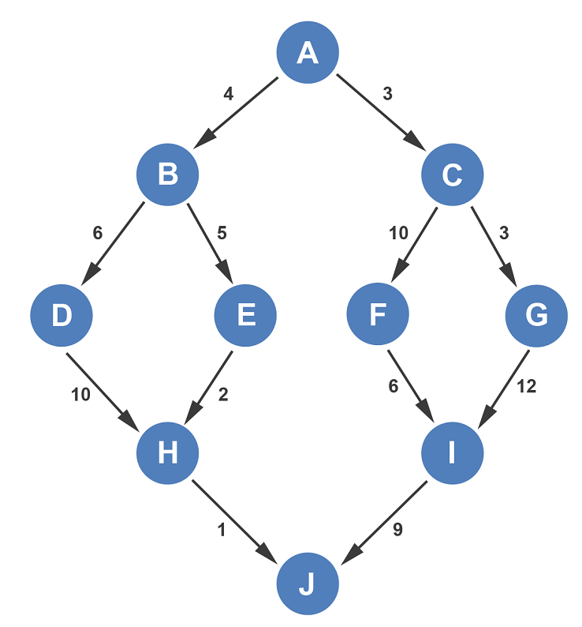

|  |
Despre metoda:
Algoritmii greedy formează o paradigmă algoritmică(d) care urmează euristica(d)
rezolvării de probleme(d) care face la nivel local alegerea optimă pentru
fiecare etapă în speranța de a găsi un optim global.
În multe probleme, o strategie greedy produce, în general,
o soluție optimă, dar cu toate acestea o euristică greedy poate produce la
nivel local soluții optime care aproximează o soluție optimă globală într-un timp
rezonabil.
Cele 5 componente:- O mulțime de candidați, din care se creează o soluție
- Funcția de selecție, care alege cel mai bun candidat pentru a fi adăugat la soluție
- O funcție de fezabilitate, care este folosită pentru a determina dacă un candidat poate fi utilizat pentru a contribui la o soluție
- O funcție obiectiv, care atribuie o valoare unei soluții sau unei soluții parțiale, și
- O funcție de soluție, care va indica atunci când s-a descoperit o soluție completă
|